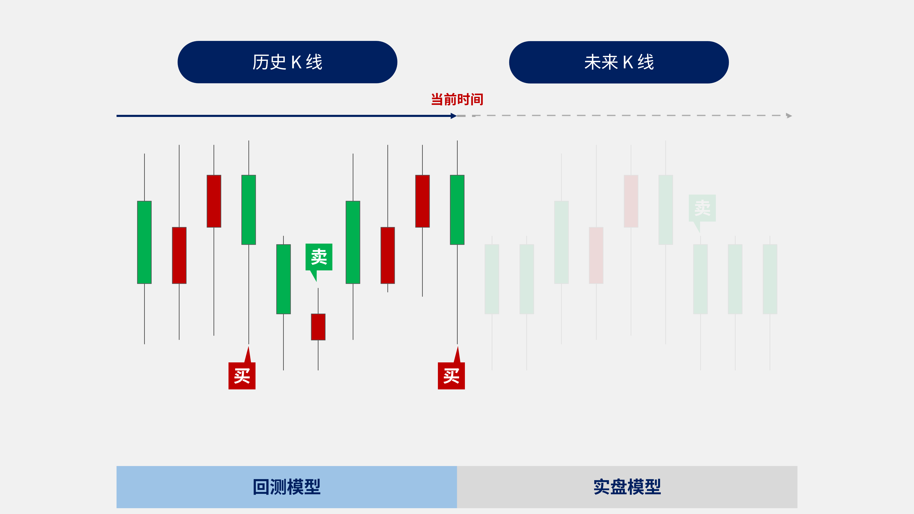

一、概述
QMT 极速策略交易系统，以下简称 QMT 系统，内置了 3.6 版本 的 python 运行环境，提供行情数据与交易下单两大核心功能。通过编写 python 脚本，可以完成指标计算，策略编写，策略回测，实盘下单等需求。
二、场景需求
QMT 系统支持回测模型与实盘模型。

回测模型： 指在历史 k 线上，自左向右逐根遍历 k 线，以模拟的资金账号记录每日的买卖信号，持仓盈亏，最终展示策略在历史上的净值走势结果。
实盘模型： 指在盘中收取最新的动态行情，即时发送买卖信号到交易所，判断委托状态，需要实时重复报撤的模型。
两类模型分别有各自的注意点：
回测模型
回测是遍历固定的历史数据：
- 首先需要下载历史行情，首次下载可以在界面左上角，点击
操作，选择数据管理补充行情，选择回测的周期，如日线，所需的板块数据，如沪深A股板块，时间范围选择全部，下载完整历史行情
- 其次设置每日定时更新，可以点击客户端右下角
行情按钮，在批量下载界面选择需要每天更新的数据，勾选定时下载选项，之后每天在指定时间会自动下载行情数据到本地
- 首先需要下载历史行情，首次下载可以在界面左上角，点击
回测模型取本地数据遍历，不需要向服务器订阅实时行情，应使用
get_market_data_ex函数，指定subscribe参数为False，来读取本地行情数据。回测模型的撮合规则为，指定交易价格在当前k线高低点间的，按指定价格撮合，超过高低点的，按当前 k 线收盘价撮合。委托数量大于可用数量时，按可用数量撮合。
- 回测模型右侧的基本信息，如默认周期，默认主图，在
我的界面点击回测时会生效。在行情界面k线下点击回测，以当前 k 线的周期，品种为准。回测必须以副图模式执行，不要选择主图 /主图叠加.
实盘模型
当你回测结束，你需要开始实盘模型，注意这里提到的实盘，指的是接收未来 K 线的数据，生成策略信号，进行交易下单。
提示
实盘模型也分模拟柜台模拟交易和真实柜台实盘交易两种。具体请参考如何配置账号
你要运行实盘模型，QMT 系统提供两种交易模式：
默认的交易模式为逐 k 线生效 (
passorder函数快速交易quicktrade参数填0即默认值)，适用与需要在盘中模拟历史上逐 k 线的效果需求。例如选择一分钟周期，将下单判断，下单函数放在handlebar函数内，盘中主图每个分笔 (三秒一次)会触发一次handlebar函数调用，系统会暂存当前handlebar产生的下单信号。三秒后下一个分笔到达时，如果是新的一分钟 k 线的第一个分笔，判断上一个分笔为前一根k线最后分笔，会将暂存的交易信号发送给交易所，完成交易。如到达的下一个分笔不是新一根 k 线的，则判定当前 k 线未完成，丢弃暂存的交易信号。1 分钟 k 线情形，每根k线内会有 20 个分笔，前 19 个分笔产生的信号会被丢弃，最后一个分笔的信号，会在下一根k线，首个分笔到达时，延迟三秒发出。系统自带的ContxtInfo也做了同样的等待，回退处理，逐 k 线模式的交易记录可以保存在ContextInfo对象的属性中。详细说明参见 常见问题：系统对象ContextInfo 逐K线保存的机制QMT 系统也支持立即下单的交易模式，
passorder函数的快速交易quicktrade参数填2，可以在运行后立刻发出委托，不对信号进行等待，丢弃的操作。此时需要用普通的全局变量(如自定义一个Class a())保存委托状态，不能存在ContextInfo的属性里。参见使用快速交易参数委托 、调整至目标持仓Demo
实盘的撮合规则以交易所为准。股票品种的话，价格不能超过 2% 的价格笼子否则废单。数量超过可用数量时会废单。
实盘模型需要在模型交易界面执行。模型交易界面，选择新建策略交易，添加需要的模型。运行模式可以选择
模拟或实盘。
提示
运行模式的模拟和实盘，与您使用的账号实际是实盘账号（真实交易所柜台）或是模拟账号（模拟交易柜台）无关。相关账号申请需要联系您做所在券商的工作人员，或者购买投研端账号获取模拟柜台撮合服务。
三、运行机制对比
QMT 系统提供两大类(事件驱动与定时任务)，共三种运行机制。
逐 K 线驱动：handlebar
handlebar是主图历史 k 线+盘中订阅推送。运行开始时，所选周期历史 k 线从左向右每根触发一次handlebar函数调用。盘中时，主图品种每个新分笔数据到达，触发一次handlebar函数调用。
提示
盘中分笔驱动，但是逐 K 线生效。请参考常见问题：系统对象ContextInfo 逐K线保存的机制
事件驱动 ：subscribe 订阅推送
盘中订阅指定品种的分笔数据，新分笔到达时，触发指定的回调函数。
定时任务 ：run_time 定时运行
指定固定的时间间隔，持续触发指定的回调函数.
不同机制匹配不同场景需求
| 机制 | 分类 | 特点 | 匹配需求 |
|---|---|---|---|
逐 K 线运行（handlebar） | 事件驱动 | 同时支持历史回测和盘中可模拟逐K线效果 | 在实盘中模拟逐K线运行的效果 |
订阅推送（subscribe） | 事件驱动 | 盘中行情分笔触发函数调用 | 盘中随分笔行情判断交易 |
定时运行（run_time） | 定时任务 | 固定间隔触发调用 | 盘中固定时间间隔判断交易 |
四、逐 K 线驱动（handlebar）示例
因此，结合不同场景需求（回测或实盘），针对不同的机制（定时任务或事件驱动），我们分别给出回测与实盘的完整示例，复制到策略编辑器中即可使用。
在编写策略前，有以下注意事项：
警告
在编写一个策略时，首先需要在代码的最前一行写上： #coding:gbk 统一脚本的编码格式是GBK
缩进需要统一 全部统一为····或者->
回测示例-基于 handlebar
回测的操作流程请参考：界面操作-策略回测
复制代码以下代码到策略编辑器：
#coding:gbk
#导入常用库
import pandas as pd
import numpy as np
import talib
#示例说明：本策略，通过计算快慢双均线，在金叉时买入，死叉时做卖出 点击回测运行 主图选择要交易的股票品种
def init(C):
#init handlebar函数的入参是ContextInfo对象 可以缩写为C
#设置测试标的为主图品种
C.stock= C.stockcode + '.' +C.market
#line1和line2分别为两条均线期数
C.line1=10 #快线参数
C.line2=20 #慢线参数
#accountid为测试的ID 回测模式资金账号可以填任意字符串
C.accountid = "testS"
def handlebar(C):
#当前k线日期
bar_date = timetag_to_datetime(C.get_bar_timetag(C.barpos), '%Y%m%d%H%M%S')
#回测不需要订阅最新行情使用本地数据速度更快 指定subscribe参数为否. 如果回测多个品种 需要先下载对应周期历史数据
local_data = C.get_market_data_ex(['close'], [C.stock], end_time = bar_date, period = C.period, count = max(C.line1, C.line2), subscribe = False)
close_list = list(local_data[C.stock].iloc[:, 0])
#将获取的历史数据转换为DataFrame格式方便计算
#如果目前未持仓，同时快线穿过慢线，则买入8成仓位
if len(close_list) <1:
print(bar_date, '行情不足 跳过')
line1_mean = round(np.mean(close_list[-C.line1:]), 2)
line2_mean = round(np.mean(close_list[-C.line2:]), 2)
print(f"{bar_date} 短均线{line1_mean} 长均线{line2_mean}")
account = get_trade_detail_data('test', 'stock', 'account')
account = account[0]
available_cash = int(account.m_dAvailable)
holdings = get_trade_detail_data('test', 'stock', 'position')
holdings = {i.m_strInstrumentID + '.' + i.m_strExchangeID : i.m_nVolume for i in holdings}
holding_vol = holdings[C.stock] if C.stock in holdings else 0
if holding_vol == 0 and line1_mean > line2_mean:
vol = int(available_cash / close_list[-1] / 100) * 100
#下单开仓
passorder(23, 1101, C.accountid, C.stock, 5, -1, vol, C)
print(f"{bar_date} 开仓")
C.draw_text(1, 1, '开')
#如果目前持仓中，同时快线下穿慢线，则全部平仓
elif holding_vol > 0 and line1_mean < line2_mean:
#状态变更为未持仓
C.holding=False
#下单平仓
passorder(24, 1101, C.accountid, C.stock, 5, -1, holding_vol, C)
print(f"{bar_date} 平仓")
C.draw_text(1, 1, '平')
基础信息设置 请参考基础信息-字段描述
回测参数设置 请参考回测参数-字段描述
实盘示例-基于 handlebar
实盘的操作流程请参考：界面操作-模型交易
复制代码以下代码到策略编辑器：
#coding:gbk
# 导入包
import pandas as pd
import numpy as np
import datetime
"""
示例说明：双均线实盘策略，通过计算快慢双均线，在金叉时买入，死叉时做卖出
"""
class a():
pass
A = a() #创建空的类的实例 用来保存委托状态
def init(C):
A.stock= C.stockcode + '.' + C.market #品种为模型交易界面选择品种
A.acct= account #账号为模型交易界面选择账号
A.acct_type= accountType #账号类型为模型交易界面选择账号
A.amount = 10000 #单笔买入金额 触发买入信号后买入指定金额
A.line1=17 #快线周期
A.line2=27 #慢线周期
A.waiting_list = [] #未查到委托列表 存在未查到委托情况暂停后续报单 防止超单
A.buy_code = 23 if A.acct_type == 'STOCK' else 33 #买卖代码 区分股票 与 两融账号
A.sell_code = 24 if A.acct_type == 'STOCK' else 34
print(f'双均线实盘示例{A.stock} {A.acct} {A.acct_type} 单笔买入金额{A.amount}')
def handlebar(C):
#跳过历史k线
if not C.is_last_bar():
return
now = datetime.datetime.now()
now_time = now.strftime('%H%M%S')
# 跳过非交易时间
if now_time < '093000' or now_time > "150000":
return
account = get_trade_detail_data(A.acct, A.acct_type, 'account')
if len(account)==0:
print(f'账号{A.acct} 未登录 请检查')
return
account = account[0]
available_cash = int(account.m_dAvailable)
#如果有未查到委托 查询委托
if A.waiting_list:
found_list = []
orders = get_trade_detail_data(A.acct, A.acct_type, 'order')
for order in orders:
if order.m_strRemark in A.waiting_list:
found_list.append(order.m_strRemark)
A.waiting_list = [i for i in A.waiting_list if i not in found_list]
if A.waiting_list:
print(f"当前有未查到委托 {A.waiting_list} 暂停后续报单")
return
holdings = get_trade_detail_data(A.acct, A.acct_type, 'position')
holdings = {i.m_strInstrumentID + '.' + i.m_strExchangeID : i.m_nCanUseVolume for i in holdings}
#获取行情数据
data = C.get_market_data_ex(["close"],[A.stock],period = '1d',count = max(A.line1, A.line2)+1)
close_list = data[A.stock].values
if len(close_list) < max(A.line1, A.line2)+1:
print('行情长度不足(新上市或最近有停牌) 跳过运行')
return
pre_line1 = np.mean(close_list[-A.line1-1: -1])
pre_line2 = np.mean(close_list[-A.line2-1: -1])
current_line1 = np.mean(close_list[-A.line1:])
current_line2 = np.mean(close_list[-A.line2:])
#如果快线穿过慢线，则买入委托 当前无持仓 买入
vol = int(A.amount / close_list[-1] / 100) * 100 #买入数量 向下取整到100的整数倍
if A.amount < available_cash and vol >= 100 and A.stock not in holdings and pre_line1 < pre_line2 and current_line1 > current_line2:
#下单开仓 ，参数说明可搜索PY交易函数 passorder
msg = f"双均线实盘 {A.stock} 上穿均线 买入 {vol}股"
passorder(A.buy_code, 1101, A.acct, A.stock, 14, -1, vol, '双均线实盘', 2 , msg, C)
print(msg)
A.waiting_list.append(msg)
#如果快线下穿慢线，则卖出委托
if A.stock in holdings and holdings[A.stock] > 0 and pre_line1 > pre_line2 and current_line1 < current_line2:
msg = f"双均线实盘 {A.stock} 下穿均线 卖出 {holdings[A.stock]}股"
passorder(A.sell_code, 1101, A.acct, A.stock, 14, -1, holdings[A.stock], '双均线实盘', 2 , msg, C)
print(msg)
A.waiting_list.append(msg)
警告
对于立刻下单的模型需要用普通的全局变量来保存状态不能ContextInfo对象存详细说明参考常见问题：系统对象ContextInfo 逐K线保存的机制
更多示例请参见完整示例
五、事件驱动（subscribe）示例
实盘示例-基于 subscribe
#coding:gbk
class a():pass
A = a()
A.bought_list = []
account = 'testaccount'
def init(C):
#下单函数的参数需要 ContextInfo对象 在init中定义行情回调函数 可以用到init函数的入参 不用手动传入
def callback_func(data):
#print(data)
for stock in data:
current_price = data[stock]['close']
pre_price = data[stock]['preClose']
ratio = current_price / pre_price - 1
print(stock, C.get_stock_name(stock), '当前涨幅', ratio)
if ratio > 0 and stock not in A.bought_list:
msg = f"当前涨幅 {ratio} 大于0 买入100股"
print(msg)
#下单函数passorder 安全起见处于注释状态 需要实际测试下单交易时再放开
#passorder(23, 1101, account, stock, 5, -1, 100, '订阅下单示例', 2, msg, C)
A.bought_list.append(stock)
stock_list = ['600000.SH', '000001.SZ']
for stock in stock_list:
C.subscribe_quote(stock, period = '1d', callback = callback_func)
六、定时任务（run_time）示例
实盘示例-基于 run_time
#coding:gbk
import time, datetime
class a():
pass
A = a()
def init(C):
A.hsa = C.get_stock_list_in_sector('沪深A股')
A.vol_dict = {}
for stock in A.hsa:
A.vol_dict[stock] = C.get_last_volume(stoA.bought_list = []
C.run_time("f", "1nSecond", "2019-10-14 13:20:00")
def f(C):
t0 = time.time()
now = datetime.datetime.now()
full_tick = C.get_full_tick(A.hsa)
total_market_value = 0
total_ratio = 0
count = 0
for stock in A.hsa:
ratio = full_tick[stock]['lastPrice'] / full_tick[stock]['lastClose'] - 1
if ratio > 0.09 and stock not in A.bought_list:
msg = f"{now} {stock} {C.get_stock_name(stock)} 当前涨幅 {ratio} 大于5% 买入100股"
#下单示例 安全起见处于注释状态 需要实际测试下单时可以放开
#passorder(23, 1101, account, stock, 5, -1, 100, '示例策略', 2, msg, C)
A.bought_list.append(stock)
market_value = full_tick[stock]['lastPrice'] * A.vol_dict[stock]
total_ratio += ratio * market_value
total_market_value += market_value
count += 1
total_ratio /= total_market_value
total_ratio *= 100
print(f'{now} 当前A股加权涨幅 {round(total_ratio, 2)}% 函数运行耗时{round(time.time()- t0, 5)}秒')